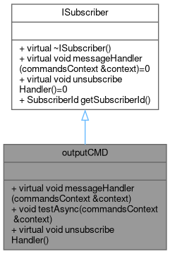
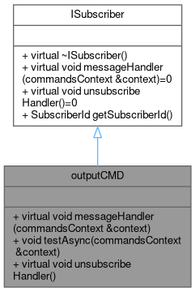
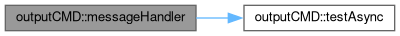
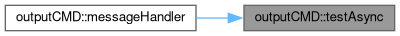

subcriber outputCMD that writes messages to console output via std::cout in async mode More...
#include <outputCMD.hpp>
Inheritance diagram for outputCMD:

Collaboration diagram for outputCMD:

Public Member Functions | |
| virtual void | messageHandler (commandsContext &context) |
| run testAsync function for console output in async via std::async | |
| void | testAsync (commandsContext &context) |
| function for console output with std::cout | |
| virtual void | unsubscribeHandler () |
| function that provides interface for function that used when subscriber was unsubscribed from Dispatcher | |
 Public Member Functions inherited from ISubscriber Public Member Functions inherited from ISubscriber | |
| virtual | ~ISubscriber () |
| Destroy the ISubscriber object. | |
| virtual void | messageHandler (commandsContext &context)=0 |
| functions for handling commands context | |
| virtual void | unsubscribeHandler ()=0 |
| function that provides interface for function that used when subscriber was unsubscribed from Dispatcher | |
| SubscriberId | getSubscriberId () |
| Get the Subscriber Id object. | |
Detailed Description
subcriber outputCMD that writes messages to console output via std::cout in async mode
Member Function Documentation
◆ messageHandler()
|
virtual |
run testAsync function for console output in async via std::async
- Parameters
-
context
Implements ISubscriber.
Here is the call graph for this function:

◆ testAsync()
| void outputCMD::testAsync | ( | commandsContext & | context | ) |
function for console output with std::cout
- Parameters
-
context
Here is the caller graph for this function:

◆ unsubscribeHandler()
|
inlinevirtual |
function that provides interface for function that used when subscriber was unsubscribed from Dispatcher
Implements ISubscriber.
The documentation for this class was generated from the following files:
- include/outputCMD.hpp
- src/outputCMD.cpp